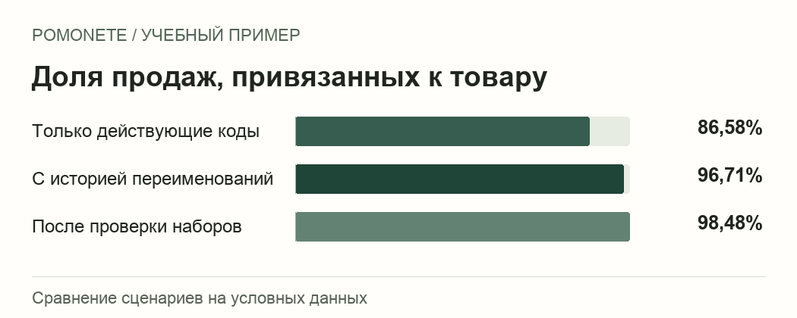

Один товар под двумя кодами. Как собрать аналитику селлера Яндекс Маркета
Считаем покрытие сопоставления старых и новых кодов на одной физической модели.
Селлер Яндекс Маркета ведёт молодые модели масляных дозаторов под новыми внутренними кодами. При сравнении месяцев одна и та же физическая модель исчезает из истории. Чтобы склеить аналитику, нужен стабильный внутренний товар и историческая таблица связей.
Как вести смену кода
Сохраните неизменяемый ключ физической модели и перечень кодов с датами. При переходе не переименовывайте всю историю. Операция остаётся под исходным кодом, а отдельная связь даёт собрать её в группу. Проверяйте товары со схожими названиями отдельно.
Чтобы пересобрать расчёт «Доля продаж, привязанных к товару» для своего магазина, перенесите в него исходные числа. В формуле A обозначает «строки с найденной связью», B обозначает «строки периода». Деление отвечает за долю, умножение на 100 переводит её в проценты. При нулевом знаменателе долю оставляют пустой. Запишите рядом период и охват каждого среза. Если для одной строки известна только оценка, оставьте пояснение непосредственно рядом с ней: по итоговой цифре источник уже не восстановить.
Доля продаж, привязанных к товару = A ÷ B × 100
| Условие | Строки с найденной связью | Строки периода | Доля продаж, привязанных к товару |
|---|---|---|---|
| Только действующие коды | 684 | 790 | 86,58% |
| С историей переименований | 764 | 790 | 96,71% |
| После проверки наборов | 778 | 790 | 98,48% |

В сценарии «Только действующие коды» в формулу подставляем строки с найденной связью = 684, строки периода = 790. Получается 86,58%. Справочник содержит новый код, а продажи под прежним кодом частично потерялись.
В сценарии «С историей переименований» в формулу подставляем строки с найденной связью = 764, строки периода = 790. Получается 96,71%. Добавлены подтверждённые связи с прежними наименованиями и датами применения.
В сценарии «После проверки наборов» в формулу подставляем строки с найденной связью = 778, строки периода = 790. Получается 98,48%. Несколько совпавших по названию товаров проверены по фактической комплектации.
Если «Только действующие коды» взять за исходную точку, «С историей переименований» меняет показатель «доля продаж, привязанных к товару» на 10,13 п. п., а «После проверки наборов» на 11,9 п. п.. Между двумя последними строками разница составляет 1,77 п. п. при вычитании второй из третьей. Смотрите, какой именно вход изменился между строками. Если менялись объём и условия одновременно, итог сравнения относится ко всему сочетанию.
В пересчёте на исходное значение разница второй строки составляет 11,7%. Здесь в знаменателе модуль первого результата, 86,58%. Для показателя в процентах рядом сохраните и абсолютную разницу в процентных пунктах. Для малого исходного значения процентный скачок может оказаться крупным даже при скромном практическом эффекте. В рабочем отчёте оставьте оба исходных значения, чтобы при расширении выборки можно было пересчитать изменение.
Где объединение приводит к ошибке
Новый код может обозначать другой размер, набор или исправление поставки. Если объединить их только по тексту названия, перемешаются остатки и себестоимость. Опирайтесь на комплектацию, штрихкод и зафиксированные изменения по товару.
Соберите небольшую исходную выборку для «С историей переименований», прежде чем переносить правило на весь магазин. Нужны исходная выгрузка, журнал загрузок и контрольные суммы. Среди записей найдите одну обычную и одну с изменённым значением «строки с найденной связью». Убедитесь, что после пересчёта на сопоставимое окно обе строки дают те же результаты, которые видит исполнитель. Для ручных поправок оставьте короткое основание.
Перед обновлением отчёта сохраните источник, параметры запроса, время выгрузки и число строк на каждом шаге. Сначала проверяют ключ и единицу наблюдения, потом сравнивают итоговые суммы. Одно и то же значение в двух строках может быть законным: совпадение суммы само по себе слабо доказывает дубль. Подключив справочник, проверьте, какие записи не сопоставились, и разнесите их по причинам до пересчёта показателя.
Что сильнее всего меняет результат
Здесь проверим устойчивость числа 96,71%, полученного для «С историей переименований». Настраиваемые входы: «строки с найденной связью», «строки периода». Меняем по одному параметру с шагом около 10% от его значения. Для небольших исходных чисел разница округляется до доступной целой единицы. Сдвиги ниже относятся к исходному сценарию, поэтому читатель может сопоставить их в одних единицах.
- «Строки с найденной связью» меняется с 764 на 688. При прежних остальных входах получается 87,09%, сдвиг составляет -9,62 п. п..
- «Строки периода» меняется с 790 на 869. При прежних остальных входах получается 87,92%, сдвиг составляет -8,79 п. п..
Наибольшее отклонение в примере связано с параметром «строки с найденной связью» и составляет -9,62 п. п.. Сохраните в расчёте, почему выбран именно этот сдвиг. После следующей выгрузки вместо учебных шагов попробуйте подставить разницу между наблюдавшимися периодами. Так проверите, насколько устойчива цифра при фактических колебаниях вашего магазина.
Сохраните случаи, где одна запись относится к набору нескольких моделей. Для товарного отчёта потребуется раскрытие комплекта. Физические штуки пересчитываются по составу, а оборот заказа остаётся своим числом.
Как отчитать неизвестные продажи
Покажите долю сопоставления и сумму оборота на неизвестных строках. Проверяйте самые крупные группы первыми. После добавления корректной связи пересчитайте обе версии и проверьте общий оборот, который должен сохраниться при смене группировки.
При повторном импорте берите ту же исходную выборку и фиксируйте, какие записи действительно изменились. В стабильном отчёте сумма после второго прогона того же набора остаётся равной первой. Отложенные корректировки могут изменить поздний снимок, поэтому журнал версий пригодится для ответа на вопрос, когда возникло отличие. Дайте пользователю отчёта ссылку на строку, которую можно проверить вручную.
Заведите карточку наблюдения с тремя числами: исходный ориентир, факт после вмешательства и размер выборки. Для «доля продаж, привязанных к товару» оставьте единицу из таблицы и дату подстановки. В аналитике продавца Яндекс Маркета показатель должен отвечать на тот же вопрос при повторном сборе. Если на следующем цикле изменятся исходники, сохраняйте расхождение вплоть до строки, которую сможет пересчитать коллега.